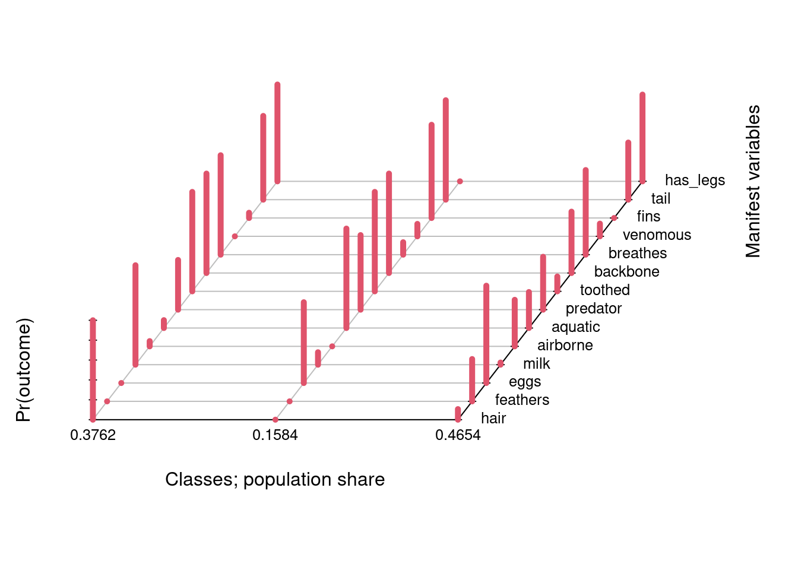

Latent Class Analysis (LCA) is a statistical modeling method that can be utilized when it is believed that there may be unobserved subgroups (classes) among the individuals within a population. To identify these unobserved groups, LCA searches for and analyzes response patterns that may exist within categorical variables reported in the dataset (Nylund-Gibson and Choi 2018). Latent Class Analysis is an example of a broader class of models called finite mixture models(FFM) (Grimm, Houpt, and Rodgers 2021) that seek to identify and classify instances of variance within model parameters between groups within the data that have not been explicitly defined as groups by the attributes provided within the dataset itself. Ultimately, it is the “latent class prevalence” which is being estimated through a process in which the LCA function is estimating the probability that every entry being assessed from the dataset belongs within each of the classes generated by the model[law2016primer].
LCA specifically makes the assumption that within the population potentially exists a finite number of unobserved subgroups, or latent classes, and that each individual belongs to only one of these classes (Weller, Bowen, and Faubert 2020). The overarching goal of LCA is to identify where a specific subset of classes exist within a group and estimate the proportions of those subset classes within the overall population. Additionally, LCA can be used to help determine if any relationships exist between the identified latent classes and any other observed variables within the dataset.
As computational efficiency has improved, Latent Class Analysis has seen an uptick in interest for researchers across a variety of fields with applications in science, business, and health (Petersen, Qualter, and Humphrey 2019). LCA is often most closely associated with identifying patterns of behavior or psychological characteristics that prove often otherwise difficult groups to identify(Kaplan 2004).
1.1 LCA Applications
One frequent application of Latent Class Analysis (LCA) has been to utilize it to identify subgroups of individuals within a population that may have similar or associated symptoms or characteristics of a mental health profile (Petersen, Qualter, and Humphrey 2019) or when and which specific barriers may exist to receiving medical care (Thorpe et al. 2011). LCA has also been used to identify when any subgroups of a population exist containing individuals that may have different risk factors or potential outcomes of a particular disease or disease pattern (Petersen, Qualter, and Humphrey 2019). Outside of health field applications, Latent Class Analysis can also be used in business and marketing to assess buying habits and even latent classes for groups with preferences for specific types of products (Kaplan 2004).
1.2 Challenges with Implementation and Analysis of Classes using LCA
LCA has the ability to use mixture-modeling to distinguish and label instances of heterogeneity within a population and to identify subgroups of characteristics or individuals that may be more likely to exhibit those characteristics of heterogeneity (Weller, Bowen, and Faubert 2020) Identifying and labeling subgroups of a population that may not be explicitly obvious based upon its reported attributes has substantial application for helping to identify individuals within that population who may be at greater risk or likelihood for a particular outcome. This application can help drive execution of actions that may require intervention (Petersen, Qualter, and Humphrey 2019).
Latent class Analysis has application across a variety of fields, but there are also limitations that exist with to its use under certain circumstances that can prove challenging to its implementation. One of the major challenges that exist in any attempted implementation of this method, is being able to determine the appropriate number of latent classes. Doing so can prove time intensive and cumbersome, as the process can be somewhat subjective and often requires using a multi-step process to test multiple models and/or number of classes (Asparouhov and Muthén 2014).
Interpretation of the classes themselves that were generated can also provide some significant challenge as it may require knowledge of not only the implementation methodology of the LCA upon the data but also requires that the analyst have access to background information about the data attributes and context (Weller, Bowen, and Faubert 2020). Though a class may be correctly identified, if the researcher/analyst does not correctly identify what is heterogenous about that class, it can lead to improper naming and assumptions about the defining characteristics of the members of that class for analysis (Weller, Bowen, and Faubert 2020).
2. Methods
The general steps to use latent class analysis are as follows:
Identify the research question and define the variables & define the categorical variables that will be used in the analysis
For this project we will be exploring how well Latent Class Analysis will group our dataset of zoo animals into subgroups based upon unmeasured homogeneity across 14 categorical variables collected for each animal. The Zoo Animals datasets is discussed in detail in Methods Section (Table 3.1.1.)
Select the appropriate software: In this project R Studio will be used for the LCA
We will be using the poLCA package library, which allows us to specify the number of classes for which we want RStudio to generate an LCA model. This package provides several tools for fitting and assessing LCA models.
Options to be utilized:
na.rm: allows poLCA to manage any cases where values may be missing within the data.
graphs: displays parameter estimates for the model in an easy-to-read prediction of member classification
nrep: allows specification of the number of repetitions for poLCA to assess the model for the best BIC value
verbose: used to assess individual attribute predictions as well as concisely providing fit statistics
Determine the number of latent classes
As discussed previously, this is potentially the most difficult decision to make regarding identification of latent classes. We will be assessing 2,3,4,5,6, and 7 number of classes in modeling. The model fit assesment is performed in step 5.
Estimate the model: Estimate the model parameters using maximum likelihood estimation or Bayesian estimation
We will be running each of our 6 models for 100 repetitions. This will allow us to have consistent results for each number of classes per model to report upon without large swings in class sizes and predictions, and will additionally provide a best model for each number of classes.
Evaluate the model: After estimating the model, evaluate its fit using goodness-of-fit statistics such as the likelihood ratio test, Akaike Information Criterion (AIC), and Bayesian Information Criterion (BIC), entropy, and chi-square Goodness-of-Fit. If our model fits well, interpret the results and report the estimated probabilities of individuals belonging to each class.
In a traditional research environment, these statistics would be likely the best decision criteria we could expect to have for assessing the model. In the case of our data, we have a comparison classification attribute “type” in our dataset that we will withhold from the Latent Class Analysis procedure as a secondary means to assess how well the model classifies the members of the dataset - in this case animals within a zoo. It is possible, however, that the LCA may find latent classes that differ from these defined classifications, which roughly correspond to the Linnaean taxonomic classification of classes within the Kingdom Animalia.
Conduct sensitivity analysis: Finally, conduct sensitivity analyses to test the robustness of the results and evaluate the stability of the estimated probabilities across different subgroups or samples.
Researchers have the ability to modify the model specification by either adding or removing variables or constraints to assess the sensitivity of the results to these changes. For instance, to evaluate the impact of a constraint that limits the relationship between two variables, they can conduct a correlation test of the indicator variables in the complete dataset and within each identified latent class. In the case of high collinearity, where the variables are highly correlated with each other, it may be necessary to remove one or more indicators to avoid redundancy and prevent multicollinearity issues in the analysis(Sinha, Calfee, and Delucchi 2021).
In this step, we will generate the correlation matrix and identify the highly correlated variables. We will then test the model by removing these variables and comparing the new model to the previous model which includes these variables. We will evaluate whether the new model is still able to fit the data well and compare its goodness of fit statistics (such as AIC, BIC) to those of the previous model. If the new model shows improvement in goodness of fit, we may consider selecting it as our final model.
3. Analysis and Results
3.1 Dataset Description
For the purpose of this paper, we are using a dataset from Kaggle called Zoo Animals. There are 101 entries and a total of 18 variables in this dataset.The variables give information about the physical attributes of each of the animals, such as if they have hair, if they have teeth, if they lay eggs, etc. Of the 18 variables, 15 of them are binary variables and one of them is discrete. This majority of binary variables is why we chose this dataset for Latent Class Analysis.
The variable that we are concerned with the most is the “type” variable. This variable has 7 categories: mammals, fish, birds, insects, reptiles, invertebrates, amphibians. Of the 101 entries, 42 are mammals (41.58%), 21 are birds (20.79%), 14 are fish (13.86%), 11 are invertebrates (10.89%), 8 are insects (7.92%), 6 are reptiles (5.94%), and 5 are amphibians (4.95%).
Among other variables, we will be removing the “type” variable from the dataset. Latent Class Analysis will be utilized to ascertain whether the groups identified by this method correspond to the seven animal types.
Table 3.1.1 Variables considered in LCA Analysis:
Code
library(formattable)tab_lca_var <-data.frame(var_num =1:14, Variable =c('hair', 'feathers','eggs','milk','airborne','aquatic','predator','toothed','backbone','breathes','venomous','fins','tail','has_legs'),Variable_Description =c('Has hair?','has feathers?','Lays eggs?','Produces milk?','Can fly?','Can swim?','Is a predator?','Has teeth?','Has a backbone?','Animal breathes?','Has venom?','Has fins?','Has a tail?','Has legs?'))formattable(tab_lca_var)
var_num
Variable
Variable_Description
1
hair
Has hair?
2
feathers
has feathers?
3
eggs
Lays eggs?
4
milk
Produces milk?
5
airborne
Can fly?
6
aquatic
Can swim?
7
predator
Is a predator?
8
toothed
Has teeth?
9
backbone
Has a backbone?
10
breathes
Animal breathes?
11
venomous
Has venom?
12
fins
Has fins?
13
tail
Has a tail?
14
has_legs
Has legs?
Table 3.1.2 Variables in original dataset, but not used in LCA models:
Code
tab_nonlca_var <-data.frame(var_num =1:4, Variable =c('animal', 'domestic','catsize','type'),Variable_Description =c('Animal Name','Commonly domesticated?','About the size of a cat?','Animal Classification'))formattable(tab_nonlca_var)
var_num
Variable
Variable_Description
1
animal
Animal Name
2
domestic
Commonly domesticated?
3
catsize
About the size of a cat?
4
type
Animal Classification
3.2 Load Necessary Packages
When the data is first loaded, with each categorical variable, there is an apostrophe and a “b” before each word and at the end, there is an apostrophe. The data were cleaned into the file Zoo_clean with these extra characters removed leaving only “TRUE” & “FALSE”.
As mentioned above, we will be removing the “type” variable from the dataset with the goal of trying to replicate this level of classification through the latent class detection. The identifier variable “animal” will also be removed. Finally, we only want objective binary variables in our dataset, so we will also be removing “catsize” and “domestic” from the dataset, and transforming legs (denoting the number of legs a creature has) to has_legs (a binary operator indicating whether any legs are present or not).
We will be using the poLCA function from the poLCA package library, which requires an input of positive integer values <=1. As such, we transformed our dataset from logical operators TRUE/FALSE to binary integers 0/1. But as poLCA function cannot accept “0” as a value, we further transformed the data by incrementing all values by 1, wherein “FALSE” is represented by “1”, and “TRUE” is represented by “2”.
Code
# Adding attribute has_legs to denote whether the animal has a leg count >0new_zoo <- Zoo_clean %>%mutate(has_legs =ifelse(legs ==0, 0, 1))# Removing the non-binary integer representing the number of legs an animal hasnew_zoo <- new_zoo %>%mutate(legs =NULL)# Transforming has_legs to a logical operator to match the rest of the dataset # to be used in assessmentnew_zoo$has_legs <-as.logical(new_zoo$has_legs)# Creating a 14-variable subset of the 18-variable dataset with "animal", # "domestic", "catsize", and "type" removednew_zoo_subset <- new_zoo %>%mutate(animal=NULL, domestic=NULL, catsize=NULL, type=NULL)# Creating a dataset where the binary data is represented by # integers "0" for "FALSE" or "1" for "TRUE"new_zoo_int <- new_zoo_subset %>%mutate_all(~as.integer(.))# Creating a dataset where the binary data is represented by # integers "1" for "FALSE" or "2" for "TRUE"new_zoo_int_1 <- new_zoo_int %>%mutate_all(~. +1)
4. Statistical Modeling
Below we use the cbind function used to bind Columns being used in LCA
Code
# cbind function used to bind Columns being used in LCAlca_bind <-cbind(hair, feathers, eggs, milk, airborne, aquatic, predator, toothed, backbone, breathes, venomous, fins, tail, has_legs) ~1
4.1 Fitting LCA Models with # of Classes from 2-7
Fitting a 2-class LCA Model
For the 2-class model, we have selected to display the output of the poLCA model results using the [verbose = TRUE] option.
For each variable, this indicates the percentage of “TRUE” & “FALSE” values. These are represented graphically for the remainder of the models.
We chose to assess up to 7-class models because the original # of classifications was 7 “types”.
Code
# Fitting a 2-class LCA Modellca_fit2 <-poLCA(lca_bind, data = new_zoo_int_1, nclass =2, graphs =TRUE, na.rm =TRUE, nrep=100, verbose =FALSE)
Figure 4.1.1 - 2-Class Model LCA Class Population Proportions
Fitting a 3-class LCA Model
Code
# Fitting a 3-class LCA Modellca_fit3 <-poLCA(lca_bind, data = new_zoo_int_1, nclass =3, graphs =TRUE, na.rm =TRUE, verbose =FALSE, nrep=100)

Figure 4.1.2 - 3-Class Model LCA Class Population Proportions
Figure 4.1.6 - 7-Class Model LCA Class Population Proportions
4.2 Model Comparison Statistics
Arguably the model difficult part of using Latent Class Analysis is determining the correct number of classes to use to properly model the data. There are a number of statistics that help to indicate fit quality for each model, which we go through below to help select the correct number of classes for a good model.
As a note: For each of these models, we are running 100 repetitions, and the criteria for which the best model is chosen is using the lowest BIC. The models and fit statistics can vary slightly through each run, even with 100 repetitions.
To compare these models, we will be primarily looking at the Akaike Information Criterion (AIC), the Bayesian Information Criterion (BIC), and the Chi-square goodness of fit statistic (X^2).
A lower value for the AIC and BIC values as well as the (X^2), indicate that the model is a better fit for the data.
As illustrated in the figure below,the 5-class, 6-class, and 7-class models all have substantially lower values for these statistical metrics than for the 2-class, 3-class, and 4-class models. It is worth noting however, that the 7-class model posts an alert indicating that the number of parameters estimated exceeds the number of observations, which effectively provides a negative residual Degree of Freedom (DoF). For this reason, we can eliminate the 7-class model.
The 5-class model has a better fit according to the BIC(1177) values compared to the 6-class model BIC(1199), but the AIC for the 6-class model (966) is slightly better than the 5-class model AIC(983).
The Chi-square goodness of fit statistic (X^2) for the 5-class model(1858) is better however than the (X^2) for the 6-class model(2283). Without a clearly better model between these two, we can further compare their entropy (see below).
Figure 4.2.1 Model Comparison
The entropy of a model speaks to how well the classes are separated with a higher entropy value indicating a likely increase in the separation of classes.
As we see below, the 5-class model has a slightly higher entropy value than the 6-class model implying a slightly higher separability of classes. With AIC, BIC, and entropy in favor of the 5-class model, we select this model to use to assess and illustrate the classification schema that LCA uses to classify the dataset.
With the better BIC, GoF(X^2), and Entropy value, we selected the 5-Class model as our preferred model.
The graph below shows along the x-axis, the proportions of the total dataset population that were classified into each of the 5-class of these model.
Class 1 - 12.85% Class 2 - 20.78% Class 3 - 35.46% Class 4 - 13.09% Class 5 - 17.82%
Under a normal research environment, we would not have the true classifications to compare these classes to against their predicted counterparts. But as we chose a dataset for which we could remove classification values and have the LCA models assess the attributes of the members, we designed the experiment to illustrate how Latent Class Analysis predicts which class a member should belong to, and can compare these to against a real classification schema.
For the purposes of these figures, we filtered selections based on whether the attributes had above ~70% likelihood of being members in the class according to the model. By doing so, there is the potential for overlap with certain member showing in more than one class, but with that in mind, this approach has the benefit of showing how potentially effective LCA can be at detecting these latent groups.
Class 1 which is estimated to contain ~12.85% of the population predicts its members to have eggs, aquatic, toothed, backbone, fins, tail. We filtered the cleaned new_zoo dataset for these attributes, and noted that all members were classified as type “fish” in the original dataset.
Figure 4.3.2 Class 1 - 12.85% of the Population
Class 2 which is estimated to contain ~20.78% of the population predicts its members to have feathers, eggs, backbone, breathes, tail, has_legs. We filtered the cleaned new_zoo dataset for these attributes, and noted that all members were classified as type “bird” in the original dataset.
Figure 4.3.3 Class 2 - 20.78% of the Population
Class 3 which. as the largest class, is estimated to contain ~35.46% of the population predicts its members to have hair, toothed, backbone, breathes, tail, has_legs. We filtered the cleaned new_zoo dataset for these attributes, and noted that all members were classified as type “mammal” in the original dataset. (There are additional members not pictures in the screenshot due to the size of the class).
Figure 4.3.4 Class 3 - 35.46% of the Population
Class 4 which is estimated to contain ~13.09% of the population becomes less homogenous. The original classification schema of “type” had 7 unique values, which implies that with a 5-class model, overlap is inevitable. This is only visible due to the fact that we have the original data for “type” for illustration purposes, which is unlikely to be the case in research data.This class’ members ar predicted to have aquatic, predator, toothed, backbone, breathes, tail. We filtered the cleaned new_zoo dataset for these attributes. The resulting filter only yielded 5 members, which are mostly aquatic mammals and a single amphibian.
Figure 4.3.5 Class 4 - 13.09% of the Population
Class 5 was our final class, and estimated to contain 17.09% of the population. This class is the least homogenous, and it should be noted that it has two attributes (breathes and predator) which were both over 50% shown on the graoh, but as we excluded our filtering to ~80% and above, these are not selected in the filter.
These class members are predicted to have eggs and has_legs. While this limited selection duplicates a few of the previous members that were selected for other classes, this class also contains the invertebrates and insects, which were not present in the other classes.
Figure 4.3.4 Class 5 - 17.09% of the Population
4.4 Sensitivity Analysis - Correlation
As seen in the correlation matrix and heatmap milk is highly correlated with both egg and hair.
Correlation matrix for sensitivity analysis
Correlation heatmap for sensitivity analysis
Editing and Update In-Progress
Conclusion
Our research indicates that Latent Class Analysis (LCA) is an exceptionally effective tool at classifying categorical variables based upon their attributes. With the dataset-defined “type” classification as a reference, our 5-class predictive model has shown that LCA as a process can be used to successfully define where relevant classes exist when not otherwise defined from collected data, even with our relatively small dataset (101 points). LCA does have limited scope in that both the indicator(categorical dependent variables) and latent variables must be categorical, where other separate processes such as Latent Profile Analysis (LPA), Latent Trait Analysis (LTA), and Factor Analysis exist for circumstances when one or both of the indicator and latent variables are continuous (Law and Harrington 2016).
With larger datasets, and proper screening of models, LCA is a powerful tool for finding group commonalities between members of a group, particularly in disciplines where research is often done through self-reporting and assessment of softer-science categories such as opinion, behavioral observations, and medical research(Kaplan 2004). Even highly complex data can potentially become much more meaningful through the use of Latent Class Analysis, but the substantial challenges that exist with determining the fit of the ideal model require consistent acknowledgment of the possibility for error on the part of researcher, and transparency with regard to the processes used within the research(Law and Harrington 2016).
References
Asparouhov, Tihomir, and Bengt Muthén. 2014. “Auxiliary Variables in Mixture Modeling: Three-Step Approaches Using m Plus.”Structural Equation Modeling: A Multidisciplinary Journal 21 (3): 329–41.
Grimm, Kevin J, Russell Houpt, and Danielle Rodgers. 2021. “Model Fit and Comparison in Finite Mixture Models: A Review and a Novel Approach.” In Frontiers in Education, 6:613645. Frontiers Media SA.
Law, Ernest H, and Rachel Harrington. 2016. “A Primer on Latent Class Analysis.”Value & Outcomes Spotlight 2 (6): 18–19.
Nylund-Gibson, Karen, and Andrew Young Choi. 2018. “Ten Frequently Asked Questions about Latent Class Analysis.”Translational Issues in Psychological Science 4 (4): 440.
Petersen, Kimberly J, Pamela Qualter, and Neil Humphrey. 2019. “The Application of Latent Class Analysis for Investigating Population Child Mental Health: A Systematic Review.”Frontiers in Psychology 10: 1214.
Sinha, Pratik, Carolyn S Calfee, and Kevin L Delucchi. 2021. “Practitioner’s Guide to Latent Class Analysis: Methodological Considerations and Common Pitfalls.”Critical Care Medicine 49 (1): e63.
Thorpe, Joshua M, Carolyn T Thorpe, Korey A Kennelty, and Nancy Pandhi. 2011. “Patterns of Perceived Barriers to Medical Care in Older Adults: A Latent Class Analysis.”BMC Health Services Research 11: 1–12.
Weller, Bridget E, Natasha K Bowen, and Sarah J Faubert. 2020. “Latent Class Analysis: A Guide to Best Practice.”Journal of Black Psychology 46 (4): 287–311.